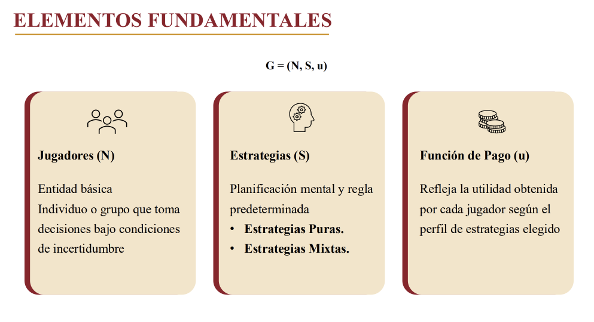
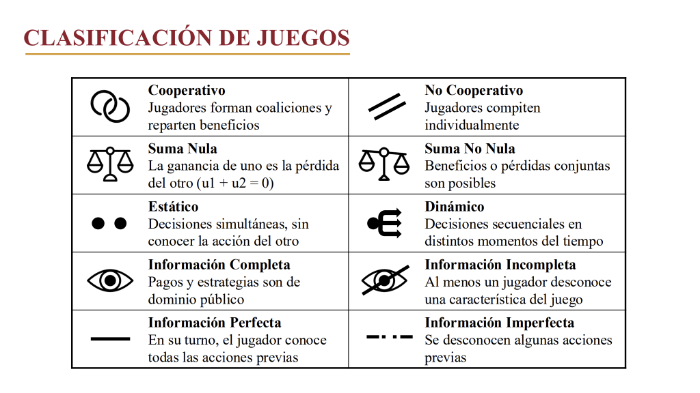
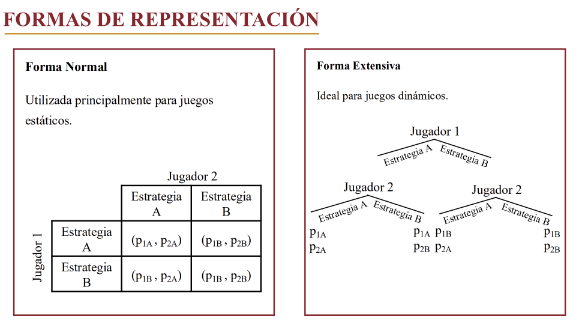
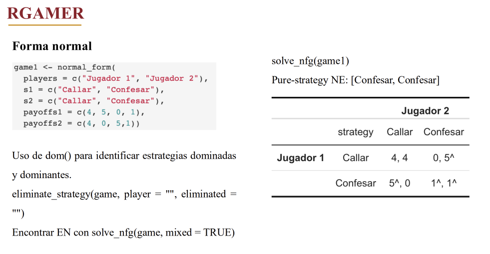
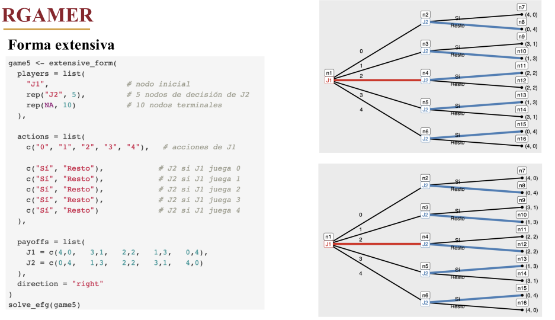
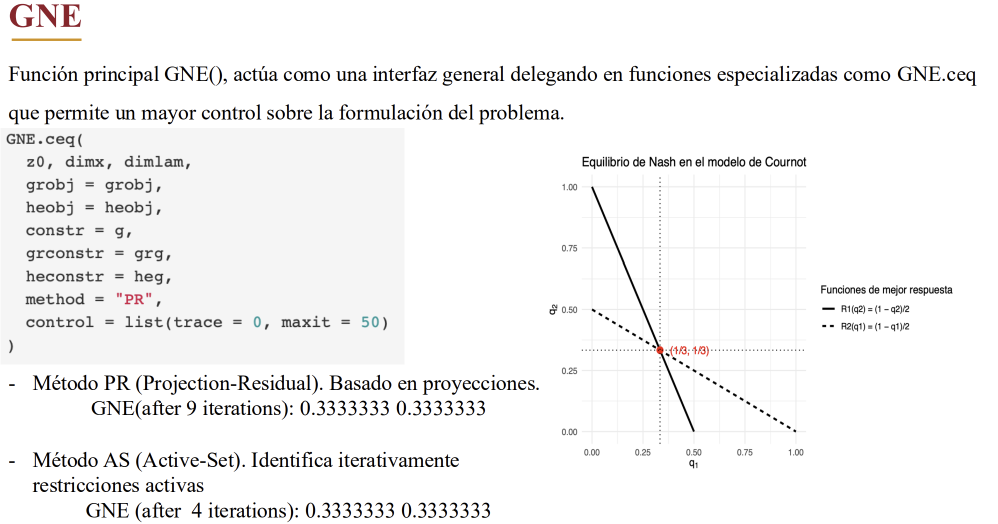
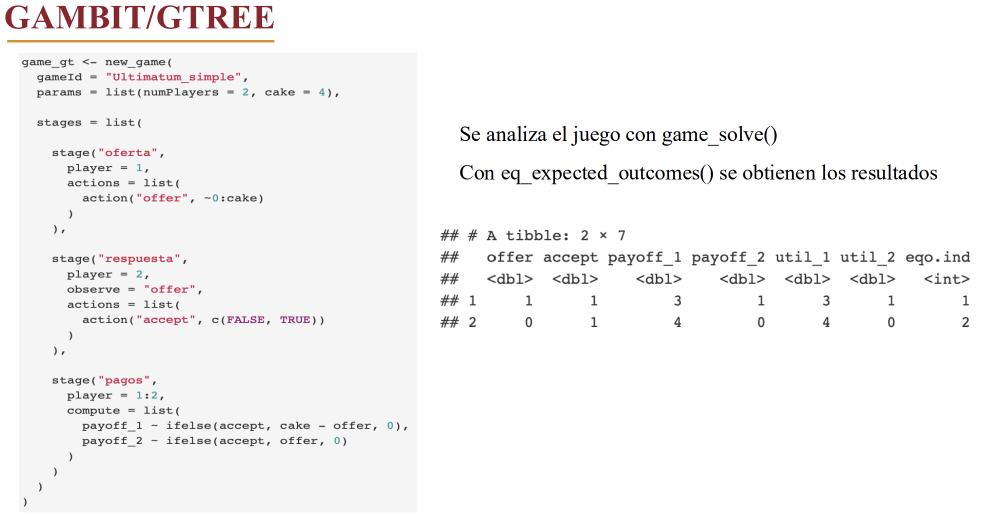
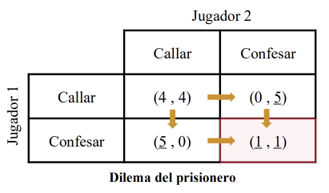
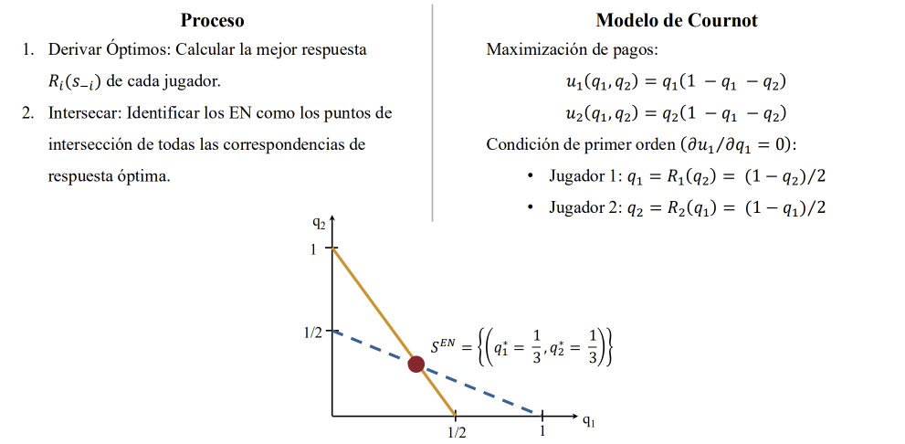

PROYECTO ACADÉMICO · GRADO EN ESTADÍSTICA · UNIVERSIDAD DE SEVILLA
Teoría de juegos y aplicaciones con R
Trabajo de Fin de Grado centrado en el estudio de la teoría de juegos, sus fundamentos matemáticos y su aplicación computacional mediante el lenguaje de programación R.
Descripción del trabajo
La teoría de juegos es una rama de las matemáticas que estudia situaciones estratégicas en las que las decisiones de cada participante influyen en los resultados obtenidos por los demás.
En este trabajo se estudian diferentes tipos de juegos, sus formas de representación y los principales conceptos utilizados para analizar sus soluciones. Se presta especial atención a los juegos estáticos y dinámicos con información completa, abordando conceptos como las estrategias dominantes, la eliminación de estrategias dominadas y el equilibrio de Nash.
La parte práctica utiliza R y diferentes herramientas específicas para representar juegos, analizar estrategias y obtener soluciones computacionales.
Contenidos desarrollados
1. Fundamentos de la teoría de juegos
Estudio de los componentes fundamentales de un juego, incluyendo jugadores, estrategias y pagos, así como las principales clasificaciones y formas de representación.
Se abordan los juegos cooperativos y no cooperativos, estáticos y dinámicos, y los modelos con información completa e incompleta.



2. Estrategias y conceptos de solución
Análisis de las estrategias disponibles para los participantes, incluyendo estrategias dominantes, dominadas y procedimientos de eliminación iterativa.
También se estudian las mejores respuestas y los criterios utilizados para identificar soluciones en diferentes tipos de juegos.
3. Equilibrio de Nash y juegos dinámicos
Estudio del equilibrio de Nash en estrategias puras y mixtas, así como de la optimalidad de Pareto y el equilibrio perfecto en subjuegos.
Se introduce la inducción hacia atrás como procedimiento para resolver juegos dinámicos representados en forma extensiva.
4. Aplicaciones computacionales con R
Utilización del lenguaje R y de diferentes herramientas para representar juegos, analizar sus características y calcular sus soluciones.
Se trabaja con paquetes y herramientas como rgamer, GNE y gtree, además de Gambit, para estudiar diferentes modelos.




Casos prácticos analizados
Los conceptos teóricos se aplican a diferentes situaciones estratégicas para estudiar las decisiones de los participantes y los resultados que pueden alcanzarse.
Dilema del prisionero
Análisis de un juego clásico de decisiones estratégicas, estudiando las estrategias disponibles y el equilibrio resultante.

Piedra, papel o tijera
Estudio de un juego de estrategias mixtas, analizando la distribución de probabilidades y las condiciones de equilibrio.
Batalla de los sexos
Análisis de un juego de coordinación en el que los participantes tienen preferencias diferentes sobre los posibles resultados.
Modelo de Cournot
Estudio de la competencia entre empresas que toman decisiones sobre las cantidades de producción, analizando las funciones de reacción y el equilibrio del modelo.

Juegos secuenciales de reparto
Análisis de situaciones en las que los participantes toman decisiones de manera sucesiva, utilizando la inducción hacia atrás.
Juegos de entrada al mercado
Estudio de situaciones estratégicas relacionadas con la entrada de empresas en un mercado y las decisiones de los participantes.
Resultados y conocimientos aplicados
El trabajo permitió profundizar en los fundamentos matemáticos de la teoría de juegos y aplicarlos a diferentes situaciones estratégicas.
Mediante R se desarrollaron representaciones y resoluciones computacionales de distintos modelos, combinando el razonamiento matemático con herramientas de programación.
Este proyecto permitió aplicar conocimientos de modelización matemática, análisis de estrategias, resolución de problemas y programación en R.
Herramientas utilizadas
Para el desarrollo de la parte computacional se utilizaron las siguientes herramientas:
Información académica
Titulación: Grado en Estadística
Universidad: Universidad de Sevilla
Trabajo: Teoría de juegos y aplicaciones con R
Tutor: José Luis Pino Mejías